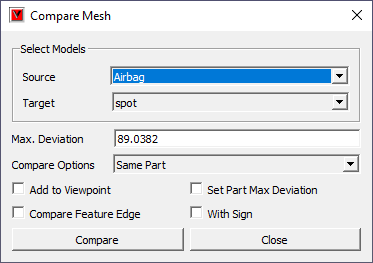
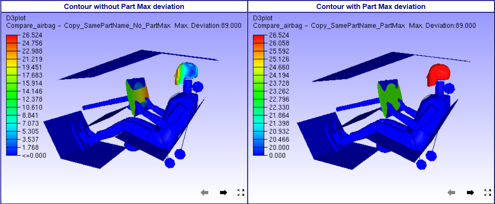
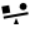
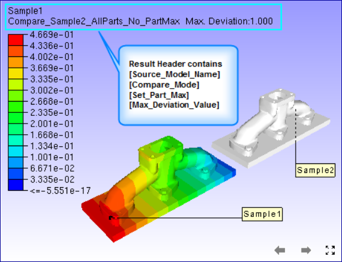
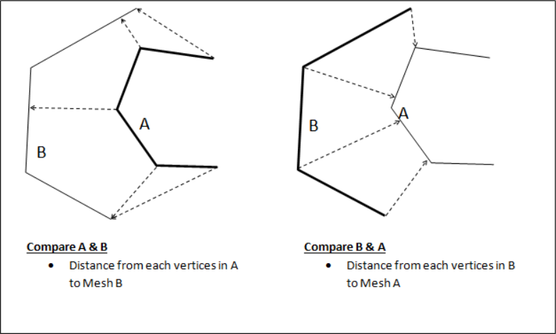
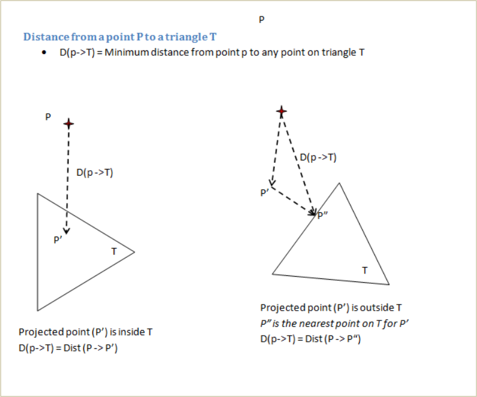

Compare Mesh¶
This section explains the procedure to compare mesh geometry of two merged models. It compares two selected models, source and target models. For each vertex from source model, nearest point on the target model is computed and the shortest distance value is stored as a CAE result for the source model. This new result can be displayed like any other CAE result.
Pre-condition
At least two or more cax models should exist in scene.
Compare Mesh Panel

Source |
Select source model. |
Target |
Select target model. |
Max. Deviation |
Specify maximum deviation of interest. This value is used as a bound to select target mesh geometry. Default value is computed based on the source model bounding radius. |
Compare Options |
Select compare mode. #. Same Part: Parts with same name are compared. #. Visible Parts: Each source part is compared with all visible target model parts. #. All Parts: Each source part is compared with all target model parts |
Add to Viewpoint |
New result will be displayed and added as a viewpoint. |
Set Part Max Deviation |
All nodes of the part are set with one maximum distance value. This will highlight deviated parts. |
Compare Feature Edge |
Compares feature edges of models in addition to usual comparison. |
With Sign |
Based on the surface normal of the target model, this function determines whether the sign is positive or negative. |
Compare |
Click Compare to compute and display deviation result. New result (or instance) is added to the CAE result list. |
Note
If ‘Add to Viewpoint’ option is ON, a viewpoint with a name ‘[sourcemodel]_ Vs_[targetmodel]_[maxDistanceValue]_[compareMode]’ will be created under the viewpath ‘Compare_Mesh’.
User can not compare same models again with same dialog parameters
Max. Deviation: Max. Deviation is used to filter the number of triangles in target model used for finding shortest distance for comparison. When Max. Deviation is a large value, more number of triangles are considered and computation can be slow. When no triangles are found within this limit, a large value is set as distance. The default value for the maximum deviation is set based on source model bounding box. User has to specify Max. Deviation based on the distance that need to be measured. For quick analysis, user can set a small value based on the size of triangles.
Model/Part Transformation: All the model and part transformations (Pick & Move, Explode) are considered while computing the deviation.
Set Part Max Deviation: First deviation for each node for a part is computed. Then, If the option is false, the deviation for each node is stored as CAE result. If the option is true, then all nodes of the part are set with same maximum part deviation. This way a part will have same result or color. The parts with deviation will get highlighted using this option.

Load and Merge at least two models.
Click ‘Compare Mesh’ icon in Tools toolbar.
It pops up Compare Mesh interface.
Select Source Model.
Select Target Model.
Specify Max.Deviation if necessary.
Select Compare Mode from Compare Options.
Click Compare.
New CAE result with name “Compare [Target Model Name]_[Compare Mode]_[SetPartMax ON/OFF]” will be created with new instance name “Max.Deviation: [Deviation Value]” to Source Model.
User can create new comparison of same models by changing Max.Deviation value. It will be appended to the same result as another instance or iteration.
The same result is selected and applied for color plot.
User can handle the result as a CAE result.
Check ‘Add to Viewpoint’ option to add the scene with deviation contour to viewpoints.

Compare Mode Selection
Select compare mode Carefully, otherwise it leads to ‘N/A’ or no results.
If both the model contains parts with same name, then select ‘Same Parts’ mode.
If part names are different , go for other options,
If number of parts are more, but user want to compare specific parts, then hide unnecessary parts in source model as well as in target model. Then select ‘Visible parts’ mode.
Else click ‘All parts’ mode. It may take significant time to complete the process compared to earlier options.
How meshes are compared?
Compare mesh option is provided for comparing mesh geometry between two models.
User need to select appropriate parts in each models for comparison.
A vertex set from first (reference) model is compared with all triangles in the second model. The nearest distance from each vertex in first model to all the triangles in the second model is computed and stored as a new result in the first model. This result is displayed as a color plot. User specified distance limit is used to filter triangles from second model. 
It is recommended to use model with higher mesh density as first model.
The models used for the comparison can come from CAD or CAE models.
Distance from a vertex to a triangle is computed as follow: 